Contents
- Bullet_Impact
- Definir Geometria del Objetivo
- Asignacion de defectos puntuales en Objetivo
- Constantes del Material Objetivo
- Definir Geometria del Proyectil
- Constantes del Material Proyectil
- Alocacion de Matrices Requeridas para calculos
- Asignacion Selectiva de Propiedades
- Asignacion de condiciones iniciales
- Representacion de condiciones iniciales
- Inicio de Simulacion
- Recorrido principal en el tiempo
- Recorrido en las particulas del Target
- Recorrido en las particulas del Bullet
- Criterio de falla de Von Mises
- Graficas
- Comentarios JC
Bullet_Impact
Simulacion de impacto
Marzo 18 - 2015
Author: J. Camilo Alfonso R.
Codigo basado en rutinas de Ing. Daniel Luna
Profesor Asesor: Andres Gonzalez Mancera
Problema Especial IMEC
Simulacion de impacto entre proyectil ductil y objetivo fragil
Disponible en repositorio publico SPH
Se omiten tildes para evitar problemas de compatibilidad en ecoding
clear all; clc; close all;
Definir Geometria del Objetivo
Todas las unidades son dadas en el sistema internacional de unidades
Se define las posiciones de las particulas que conforman el objetivo
Geometria del objetivo
T_dy = 1.2e-4; % Separacion entre particulas T_dx = T_dy; % k = 2.0; % Constante para expandir radio de soporte h = k*T_dx; % Radio de soporte T_width = 0.0005; % Ancho del objetivo T_height = 0.0026; % Alto del objetivo T_x = 0:T_dx:T_width; T_y = -T_height : T_dy : T_height; [X,Y] = meshgrid(T_x, T_y); % Matriz con la malla de las posiciones x,y para las particulas Target = [X(:),Y(:)]; % | x_1 , y_1 | En esta matriz organiza % | . , . | todas las posiciones de las % | x_n , y_n | particulas. % [T_np x 2] T_np = size(Target,1); % Numero de particulas en el objetivo
Asignacion de defectos puntuales en Objetivo
Constantes para asginacion de fallas en basalto
m = 3; k = 7; T_V = T_dx*T_dy*1; % Volumen infinitesimal Nflaws = T_np*log(T_np); % Numero de defectos puntuales a asignar Nflaws = round(Nflaws); assign_flaws = randi(T_np,Nflaws,1,'uint32'); % [Nflaws x 1] % Nflaws numeros aleatorios entre 1 y T_np [Flaws{1:T_np,1}] = deal([]); % Flaws [cell array] {T_np x 1} % Cell array con ''T_np matrices vacias % Cell de pre-alocacion para fallas for i = 1:Nflaws Flaws{assign_flaws(i),1}(size(Flaws{assign_flaws(i),1})+1) = ... (i/(k*T_V))^(1/m); end
assign_flaws [Nflaws x 1] vector que contiene Nflaws posiciones de las fallas a generar. Las posiciones estan dadas como numeros enteros en relacion al numero de cada particula.
Flaws cell{T_np x 1} Contiene T_np matrices vacias que identifican las fallas para cada particula. Flaws se va llenando de forma aleatoria con las posiciones que indica assing_flaws. La primera vez que se pasa por una amtriz de Flaws, le asigna el numero (i/(k*V))^(1/m) formando una matriz 1x1. La segunda vez que se pasa por la misma matriz, aumenta la dimension de la matriz en una sola direccion para asignar otro numero. Asi, si semi-aleatoriamente, el numero k aparecio n veces de assign_flaws, la celda Flaws en su posicion k debe contener una matriz nx1 con numeros asignados. Los numeros asignados corresponden a las deformaciones de activacion para los defectos puntuales de cada particula
Constantes del Material Objetivo
Todas las unidades estan en el sistema internacional de unidades
T_rho = 1e5; %Densidad volumetrica del objetivo T_m0 = T_dx*T_dy*T_rho; %Masa de una particula %Parametros de Huggoniot T_ss = 4699; T_C = 3630; T_S = 1800; %Parametros de XSPH T_gamma = 1.81; T_alpha = 0.5; T_beta = 0.5; T_eta = 0.01; T_eps = 0.5; %Parametros de Elasticidad T_G = 8e20; % Modulo de cortante T_Y0 = 6e16; % Esfuerzo de fluencia T_E = T_ss^2*T_rho; % Modulo de Young
Definir Geometria del Proyectil
Se definen las posiciones de las particulas que conforman el proyectil.
Se asume que el proyectil se mueve en la direccion horizontal.
Proyectil rectangular
s_x = 1e-4; % Separacion en x entre proyectil y objetivo B_width = T_width*3; % Ancho del proyectil B_height = T_height/3; % Alto del proyectil B_x0 = min(Target(:,1))-B_width-s_x; B_y0 = mean(Target(:,2)); % Posiciones de referencia para el objetivo B_dx = T_dx; % Separacion entre particulas del proyectil B_dy = B_dx; B_x = [-B_width : B_dx : B_width] + B_x0; B_y = [-B_height : B_dy : B_height] + B_y0; [X,Y] = meshgrid(B_x,B_y); % Matrices con la malla para las posiciones % de la particulas en el proyectil Bullet = [X(:),Y(:)]; % Posicion de las particulas en el pryectil B_np = size(Bullet,1); % Numero de particulas en el proyectil %} % % Proyectil redondo %{ s_x = 4e-4; % separacion en x entre proyectil y objetivo B_dr = T_dx; % Variacion en el radio del proyectil B_rmax = T_height/5; % Radio maximo del proyectil B_r = B_dr:B_dr:B_rmax; % Valores del radio en el proyectil n_theta = 18*2; % Numero de puntos a considerar en el angulo B_theta = linspace(0,2*pi,n_theta); % Valores del angulo B_cx = min(Target(:,1)) - B_rmax - s_x; % Centro del proyectil B_cy = mean(Target(:,2)); B_np = length(B_r)*length(B_theta); %Numero de particulas en el proyectil Bullet = zeros(B_np,2); % Posiciones x,y de las particulas en el proyectil for i = 1:length(B_r) for j = 1:length(B_theta) Bullet((i-1)*n_theta+j,:) = [B_r(i)*cos(B_theta(j))+B_cx,... B_r(i)*sin(B_theta(j))+B_cy]; end end %}
Constantes del Material Proyectil
Por el momento estas magnitudes corresponden a las mismas del objetivo
*Consultar Propiedades para algun metal y reemplazaralas*
B_rho = 7850; %Densidad volumetrica del objetivo B_m0 = B_dx*B_dy*B_rho; %Masa de una particula B_V = B_dx*B_dy*1; %Parametros de Huggoniot B_ss = 4699; B_C = 3630; B_S = 1800; %Parametros de XSPH B_gamma = 1.81; B_alpha = 0.5; B_beta = 0.5; B_eta = 0.01; B_eps = 0.5; %Parametros de Elasticidad B_G = 8e10; % Modulo de cortante B_Y0 = 6e8; % Esfuerzo de fluencia B_E = T_ss^2*T_rho; % Modulo de Young
Alocacion de Matrices Requeridas para calculos
N_part = T_np + B_np; % Numero total de particulas Particles = [Target;Bullet]; % Posiciones de particulas V1 = zeros(N_part,1); % Velocidad en la direccion 1 V2 = zeros(N_part,1); dV1 = zeros(N_part,1); % Derivada total de V1 dV2 = zeros(N_part,1); dv1dx1 = zeros(N_part,1); dv1dx2 = zeros(N_part,1); % Derivada de V1 en direccion 2 dv2dx1 = zeros(N_part,1); dv2dx2 = zeros(N_part,1); P = zeros(N_part,1); % Presion Hidrostatica Tau11 = zeros(N_part,1); Tau12 = zeros(N_part,1); % Esfuerzos en cara 1 con direccion 2 Tau21 = zeros(N_part,1); Tau22 = zeros(N_part,1); dTau11 = zeros(N_part,1); dTau12 = zeros(N_part,1); % Derivada de esfuerzos en cara 1 con dir 2 dTau21 = zeros(N_part,1); dTau22 = zeros(N_part,1); eps11 = zeros(N_part,1); eps12 = zeros(N_part,1); % Deformacion unitaria en cara 1 con dir 2 eps21 = zeros(N_part,1); eps22 = zeros(N_part,1); E_int = zeros(N_part,1); % Energia Interna dE_int = zeros(N_part,1); % Derivada de Energia Interna
Asignacion Selectiva de Propiedades
Hay que revisar esta matrices porque las propiedades deben inicializarse de acuerdo al tipo de las particulas, es decir que se deben asignar propiedades diferentes a las particulas del objetivo y a las particulas del proyectil
M = zeros(N_part,1); % Masa de las particulas M(1:T_np) = ones(T_np,1)*T_V*T_rho; % Particulas del objetivo M(T_np+1:end) = ones(B_np,1)*B_V*B_rho; % Particulas del proyectil cs = zeros(N_part,1); % Velocidad del sonido cs(1:T_np) = ones(T_np,1)*T_ss; cs(T_np+1:end) = ones(B_np,1)*B_ss; Rho = zeros(N_part,1); % Densidad Rho(1:T_np) = ones(T_np,1)*T_rho; Rho(T_np+1:end) = ones(B_np,1)*B_rho; dRho = zeros(N_part,1); % Derivada de la densidad D = zeros(N_part,1); % Damage
Asignacion de condiciones iniciales
V_1 = 200; V_2 = 30; %rr = randint(50,1,[1,T_np]); V1(T_np+1:N_part) = V_1; % Velocidad inicial del Bullet V2(T_np+1:N_part) = V_2; % impacto oblicuo
Representacion de condiciones iniciales
figure(1) plot(Target(:,1),Target(:,2),Bullet(:,1),Bullet(:,2),... 'Marker', '.', 'LineStyle','none') title('Configuracion Inicial') xlabel('X'); ylabel('Y'); axis('equal')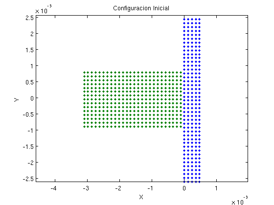
Inicio de Simulacion
display('~~~~~~~~~~~~~~~~~~~~~~~~~~~~~'); display(' Inicio de la simulacion') display('~~~~~~~~~~~~~~~~~~~~~~~~~~~~~') t = 0; %Tiempo Inicial dt = max(h/cs); % Paso de tiempo % El paso de tiempo se define de esta forma para que la % simulacion sea capaz de detectar el fenomeno mas rapido % al que sea sensible el problema % La definicion correcta es % min(h/cs) % pero lo ejecuta con max para que dt sea diferente de 0 y % la simulacion no sea muy larga tf = 0.002/max(V1); % Tiempo final - avanzar solo 1 cm steps = round(tf/dt); % Numero de pasos % % Matrices para guardar informacion de la simulacion n_m = round(20/100*steps); % Numero de datos para muestreo Coordenadas = zeros(N_part,n_m); Velocidad1 = zeros(N_part,n_m); Velocidad2 = zeros(N_part,n_m); Presion = zeros(N_part,n_m); Esfuerzos11 = zeros(N_part,n_m); Esfuerzos12 = zeros(N_part,n_m); Esfuerzos21 = zeros(N_part,n_m); Esfuerzos22 = zeros(N_part,n_m); Densidad = zeros(N_part,n_m);
~~~~~~~~~~~~~~~~~~~~~~~~~~~~~ Inicio de la simulacion ~~~~~~~~~~~~~~~~~~~~~~~~~~~~~
Recorrido principal en el tiempo
fprintf('Numero de Pasos = %d\n',steps) for ti = 1:steps
%fprintf('%d..',ti); % Busqueda de Vecinos % % *Nearpart* cell {N_part x 1}: % En el compartimiento _i_ de *Nearpart*, se encuentra un vector [1 x n] % que contiene los indices de las n particulas vecinas a la particula % de identidad _i_. % % *Dist* cell {Npart x 1}: % En el compartimiento _i_ de *Dist*, se encuentra un vector [1 x n] que % contiene la distancia _r_n_ a la que se encuentra cada una de las % _n_ particulas vecinas de la particula _i_. [Nearpart,Dist] = rangesearch(Particles,Particles,h); % % Se genera el _cell_ para el kernel *kern*. Este cell tiene las mismas % dimensiones que el cell _Dist_, con la diferencia que todos los % valores son _0_ kern = cellfun(@(x) x*0, Dist, 'un', 0); dkernx = kern; %Inicializar en 0 las derivadas del kernel dkerny = kern; % Usando las funciones kern1, dkernx1 y dkerny1 se calcula el kernel % y las derivadas del kernel x-y evaluadas en las particulas vecinas % de cada una de las particulas del dominio.
Recorrido en las particulas del Target
for i = 1:T_np kern{i} = kern1(Dist{i},h); dkernx{i} = dkernx1(Dist{i}, h, Particles, Nearpart{i}, i); dkerny{i} = dkerny1(Dist{i}, h, Particles, Nearpart{i}, i); %%%Calcular Presion hidrostatica con ecuacion de Mie-Gruniensen % % Esta parte se puede hacer mas eficiente. De esta forma es % ineficiente porque realiza validacion y asignacion para cada % particula. Creo que si hago recorridos independientes para las % particulas del objetivo y del proyectil, solo hago dos % asignaciones y ninguna verificacion. P(i) = EOSmie(E_int(i), T_rho, T_C, T_S, Rho(i), T_gamma); %%%Derivadas espaciales de las Velocidades [dv1dx1(i), dv1dx2(i), dv2dx1(i), dv2dx2(i)] = ... Velgradesp(Rho, M, V1, V2, dkernx{i}, dkerny{i},... Nearpart{i},i); %%%Deformacion unitaria [eps11(i), eps12(i), eps21(i), eps22(i)] = ... deform(dv1dx1(i), dv1dx2(i), dv2dx1(i), dv2dx2(i)); %%%Derivadas de Esfuerzos Cortantes [dTau11(i), dTau12(i), dTau21(i), dTau22(i)] = ... devstresshooke(dv1dx2(i), dv2dx1(i),... Tau11(i), Tau12(i), Tau21(i), Tau22(i),... eps11(i), eps21(i), eps22(i), T_G); %%%Calcular Esfuerzos % No se puede hacer opearacion vectorizada porque el Tau % se corrgie con criterio de Von Mises Tau11(i) = Tau11(i) + dTau11(i)*dt; Tau12(i) = Tau12(i) + dTau12(i)*dt; Tau21(i) = Tau21(i) + dTau21(i)*dt; Tau22(i) = Tau22(i) + dTau22(i)*dt; %%%Criterio de falla de Von Mises J = Tau11(i)^2 + 2*Tau12(i)*Tau21(i) + Tau22(i)^2; f = sqrt(2*T_Y0/3); if J > T_Y0*3/2 scalar = f/sqrt(J); Tau11(i) = Tau11(i)*scalar; Tau12(i) = Tau12(i)*scalar; Tau21(i) = Tau21(i)*scalar; Tau22(i) = Tau22(i)*scalar; end %%%Damage % Como se hace Taylor, se busca un objetivo infinitamente rigido % que no se fragmente. No se calcula la fragmentacion para el % objetivo %{ % Damage solo aplica para las particulas del Target % Modificacion importante respecto al codigo de Daniel: % % Cambio *if ei > length(Flaws{i}(j))* por % *if ei > Flaws{i}(j)* Hago esta modificacion porque lo que se % necesita es contar cuantos defectos puntuales se activan % %Energia de activacion ei = J/((1-D(i))*T_E); % Recorrido en los defectos puntuales for j = 1:length(Flaws{i}) count = 0; % Contar cuantos defectos se activan if ei > Flaws{i}(j) count = count + 1; end end % Damage depende del numero de fallas activas % Revisar refrencia de Damage, creo que este procedimiento no es % del todo correcto porque el Damage = 1 se alcanza solo cuando % todas los defectos estan activos. Entonces dberia ser algo de la % forma count/length(Flaws{i}) % dD = Damageevol(Rho(i), M(i), cs(i)) * count; D(i) = dD^2*dt; % Escalar esfuerzos del material con el Damage Tau11(i) = Tau11(i)*(1-D(i)); Tau12(i) = Tau12(i)*(1-D(i)); Tau21(i) = Tau21(i)*(1-D(i)); Tau22(i) = Tau22(i)*(1-D(i)); %} %%%Ecuacion de la continuidad % Calcular la derivada de la densidad para una particula dRho(i) = derivadarho(M, V1, V2, ... dkernx{i}, dkerny{i}, Nearpart{i}, i); end %%%Avanzar la densidad en el tiempo Rho(1:T_np) = Rho(1:T_np) + dRho(1:T_np)*dt; for i = 1:T_np %%%Conservacion de Momentum [dV1(i),dV2(i)] = Momentumeq2d(Tau11, Tau12, Tau21, Tau22, P, Rho,... dkernx{i}, dkerny{i}, M, Nearpart{i}, i, cs, Dist{i}, Particles,... h, V1, V2); %%%%Conservacion de la Energia dE_int(i) = Deint(Tau11(i), Tau12(i), Tau21(i), Tau22(i), P, Rho,... dkernx{i}, dkerny{i}, M, Nearpart{i}, i, cs, Dist{i}, Particles,... h, V1, V2, eps11(i), eps12(i), eps21(i), eps22(i)); end %%%Avanzar la velocidad % V1(1:T_np) = V1(1:T_np) + dV1(1:T_np)*dt; V2(1:T_np) = V2(1:T_np) + dV2(1:T_np)*dt; E_int(1:T_np) = E_int(1:T_np) + dE_int(1:T_np)*dt; %%%Correcciones for i = 1:T_np %%%Velocidad del sonido cs(i) = Miespeedofsound(E_int(i), T_rho, T_C, T_S,Rho(i), T_gamma); %%%XSPH [V1(i),V2(i)] = XSPH(Nearpart{i}, M, Rho, V1, V2, kern{i}, i); end Particles(1:T_np,:) = Particles(1:T_np,:) + ... [V1(1:T_np), V2(1:T_np)]*dt; % Hasta aca se tiene configurado completamente la simulacion para % las particulas del target
Recorrido en las particulas del Bullet
for i = T_np+1:N_part % Correccion forzosa de la posicion %if (Particles(i,1) > -T_dx/4) % Particles(i,1) = -T_dx/4; % Forzar la particula a no pasar % % el target % V1(i) = V1(i)/2.0; % V2(i) = V2(i) + sign(Particles(i,2))*V1(i)/2.0; %end kern{i} = kern1(Dist{i},h); dkernx{i} = dkernx1(Dist{i}, h, Particles, Nearpart{i}, i); dkerny{i} = dkerny1(Dist{i}, h, Particles, Nearpart{i}, i); %%%Calcular Presion hidrostatica con ecuacion de Mie-Gruniensen % % Esta parte se puede hacer mas eficiente. De esta forma es % ineficiente porque realiza validacion y asignacion para cada % particula. Creo que si hago recorridos independientes para las % particulas del objetivo y del proyectil, solo hago dos % asignaciones y ninguna verificacion. P(i) = EOSmie(E_int(i), B_rho, B_C, B_S, Rho(i), B_gamma); %%%Derivadas espaciales de las Velocidades [dv1dx1(i), dv1dx2(i), dv2dx1(i), dv2dx2(i)] = ... Velgradesp(Rho, M, V1, V2, dkernx{i}, dkerny{i},... Nearpart{i},i); %%%Deformacion unitaria [eps11(i), eps12(i), eps21(i), eps22(i)] = ... deform(dv1dx1(i), dv1dx2(i), dv2dx1(i), dv2dx2(i)); %%%Derivadas de Esfuerzos Cortantes [dTau11(i), dTau12(i), dTau21(i), dTau22(i)] = ... devstresshooke(dv1dx2(i), dv2dx1(i),... Tau11(i), Tau12(i), Tau21(i), Tau22(i),... eps11(i), eps21(i), eps22(i), B_G); %%%Calcular Esfuerzos % No se puede hacer opearacion vectorizada porque el Tau % se corrgie con criterio de Von Mises Tau11(i) = Tau11(i) + dTau11(i)*dt; Tau12(i) = Tau12(i) + dTau12(i)*dt; Tau21(i) = Tau21(i) + dTau21(i)*dt; Tau22(i) = Tau22(i) + dTau22(i)*dt;
Criterio de falla de Von Mises
J = Tau11(i)^2 + 2*Tau12(i)*Tau21(i) + Tau22(i)^2;
f = sqrt(2*B_Y0/3);
if J > B_Y0*3/2
scalar = f/sqrt(J);
Tau11(i) = Tau11(i)*scalar;
Tau12(i) = Tau12(i)*scalar;
Tau21(i) = Tau21(i)*scalar;
Tau22(i) = Tau22(i)*scalar;
end
%%%Damage
% Damage NO aplica para las particulas del bullet
%%%Ecuacion de la continuidad
% Calcular la derivada de la densidad para una particula
dRho(i) = derivadarho(M, V1, V2, ...
dkernx{i}, dkerny{i}, Nearpart{i}, i);
end
%%%Avanzar la densidad en el tiempo
Rho(T_np+1:N_part) = Rho(T_np+1:N_part) + dRho(T_np+1:N_part)*dt;
for i = T_np+1:N_part
%%%Conservacion de Momentum
[dV1(i),dV2(i)] = Momentumeq2d(Tau11, Tau12, Tau21, Tau22, P, Rho,...
dkernx{i}, dkerny{i}, M, Nearpart{i}, i, cs, Dist{i}, Particles,...
h, V1, V2);
%%%Conservacion de la Energia
dE_int(i) = Deint(Tau11(i), Tau12(i), Tau21(i), Tau22(i), P, Rho,...
dkernx{i}, dkerny{i}, M, Nearpart{i}, i, cs, Dist{i}, Particles,...
h, V1, V2, eps11(i), eps12(i), eps21(i), eps22(i));
end
%%%Avanzar la velocidad
V1(T_np+1:N_part) = V1(T_np+1:N_part) + dV1(T_np+1:N_part)*dt;
V2(T_np+1:N_part) = V2(T_np+1:N_part) + dV2(T_np+1:N_part)*dt;
E_int(T_np+1:N_part) = E_int(T_np+1:N_part) + dE_int(T_np+1:N_part)*dt;
%%%Correcciones
for i = T_np+1:N_part
%%%Velocidad del sonido
cs(i) = Miespeedofsound(E_int(i), B_rho, B_C, B_S,Rho(i), B_gamma);
%%%XSPH
[V1(i),V2(i)] = XSPH(Nearpart{i}, M, Rho, V1, V2, kern{i}, i);
end
Particles(T_np+1:N_part,:) = Particles(T_np+1:N_part,:) + ...
[V1(T_np+1:N_part), V2(T_np+1:N_part)]*dt;
Particles = real(Particles);
figure (1)
hFig = figure(1);
set(gcf,'PaperPositionMode','auto')
set(hFig, 'Position', [0 0 1000 600])
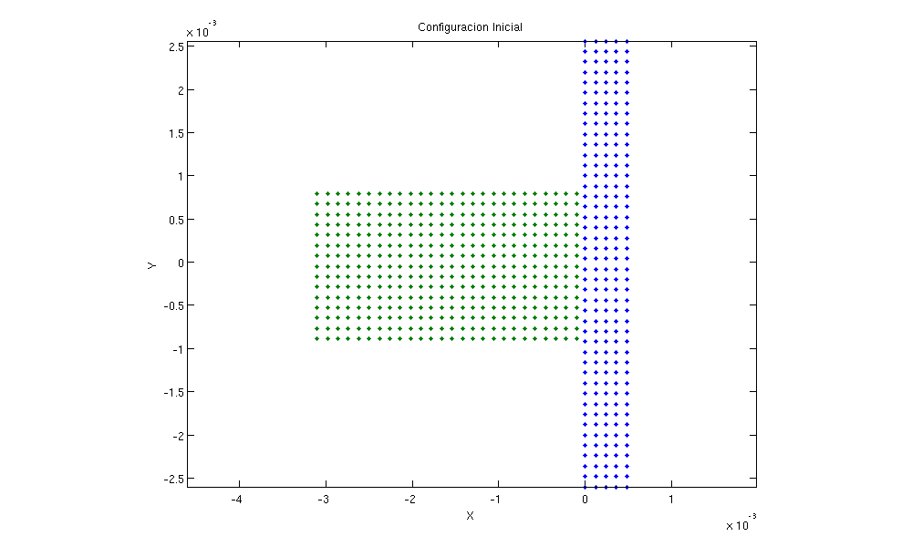 Graficas
if mod(ti-1,15)==0 %Hacer graficas cada 5 pasos hFig; %plot(Particles(1:T_np,1), Particles(1:T_np,2),'.','Color','black') %hold on %plot(Particles(T_np+1:end,1), Particles(T_np+1:end,2),'.g') %scatter(Particles(T_np+1:end,1),Particles(T_np+1:end,2),... % 10,P(T_np+1:end),'filled') subplot(1,2,1) scatter(Particles(:,1),Particles(:,2),12,P,'filled') xlim([-4e-3,2e-3]) ylim([-3e-3,3e-3]) title('Presion') %axis('equal') caxis([4e-4,4e4]); colorbar() drawnow %hold off subplot(1,2,2) scatter(Particles(:,1),Particles(:,2),15,V2,'filled') xlim([-4e-3,2e-3]) ylim([-3e-3,3e-3]) title('V2') caxis([-50,50]); colorbar() drawnow end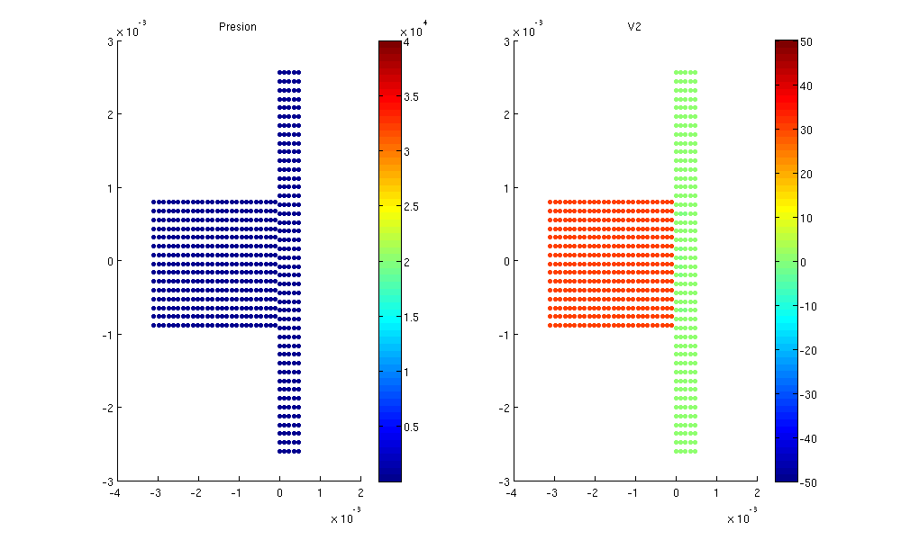 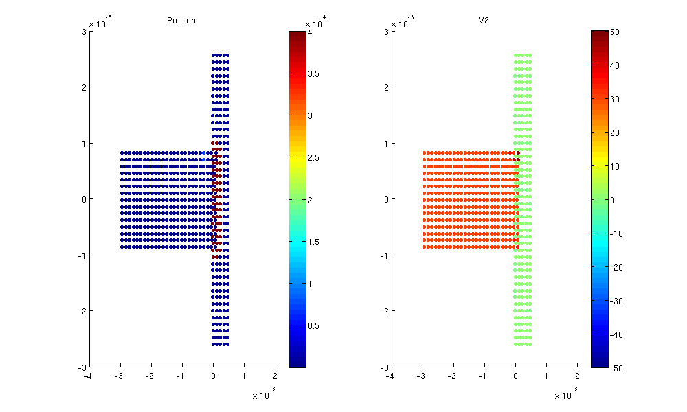 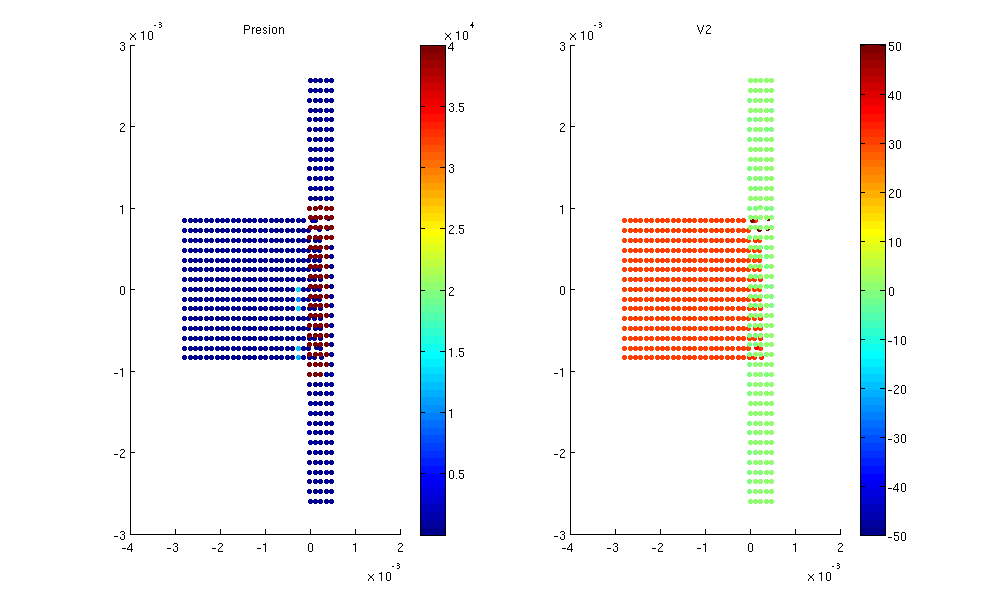 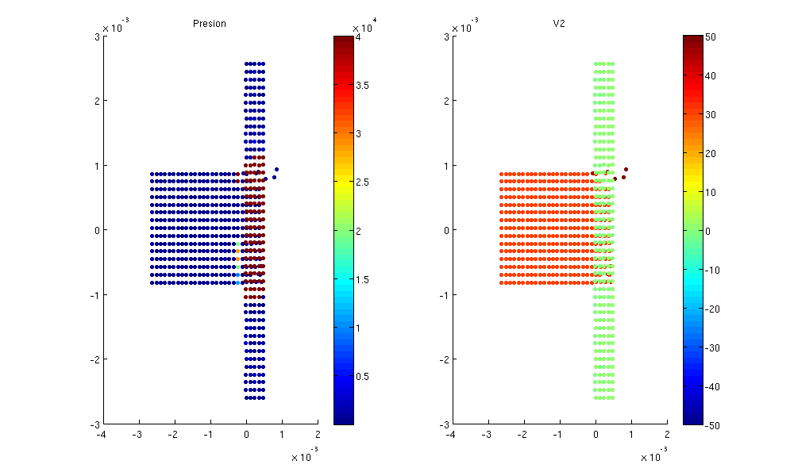 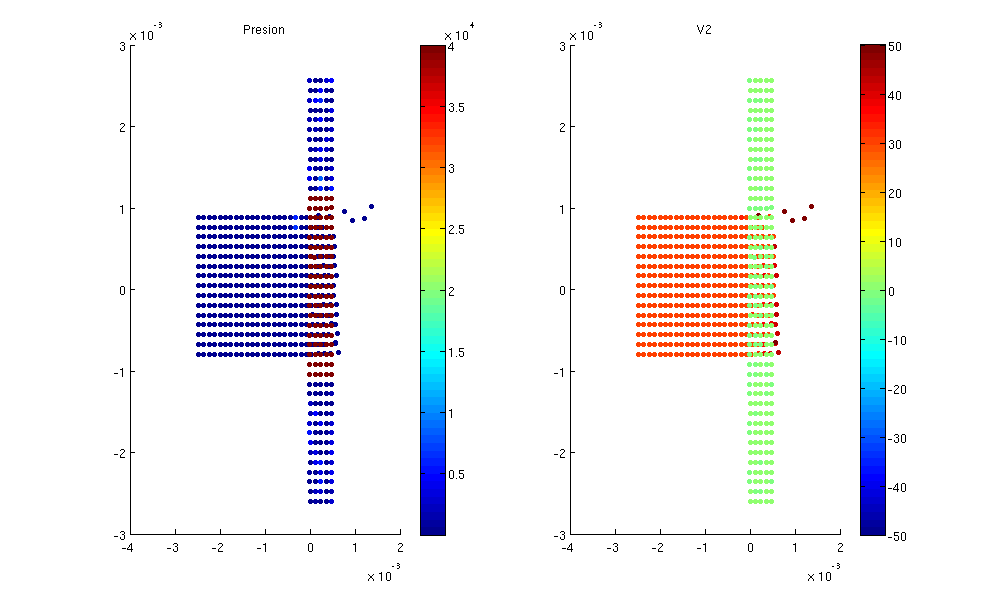 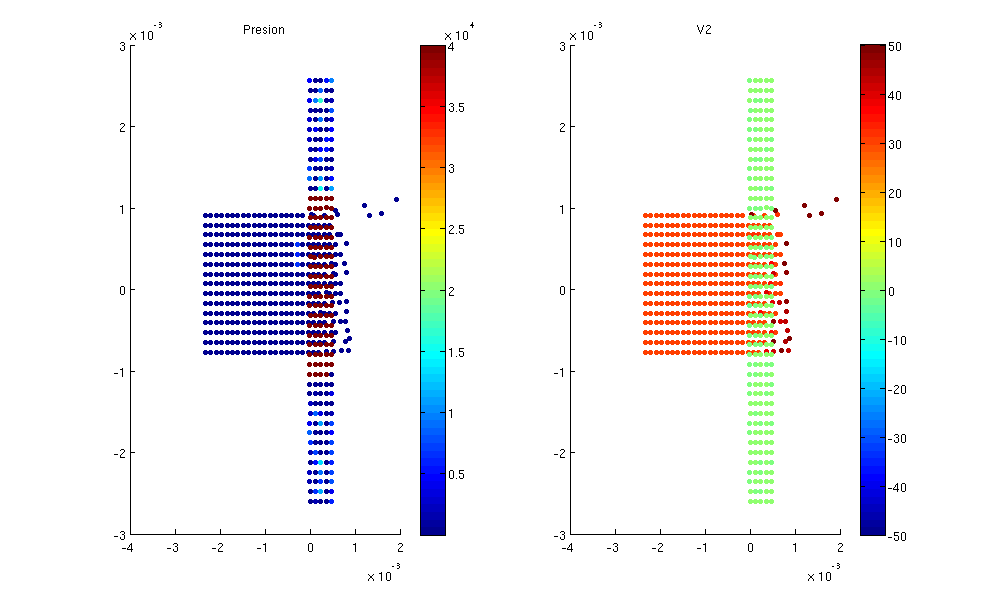 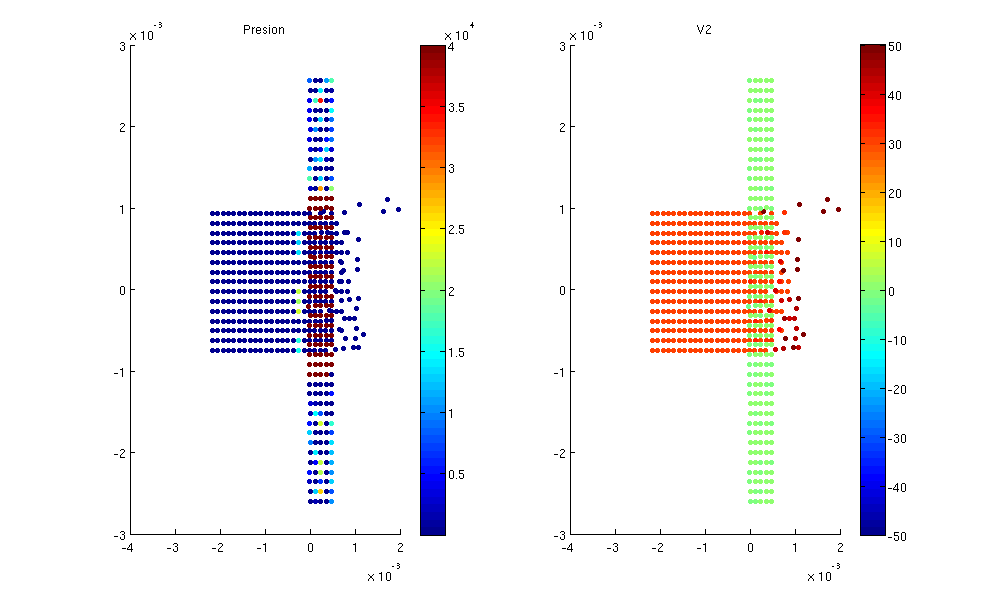 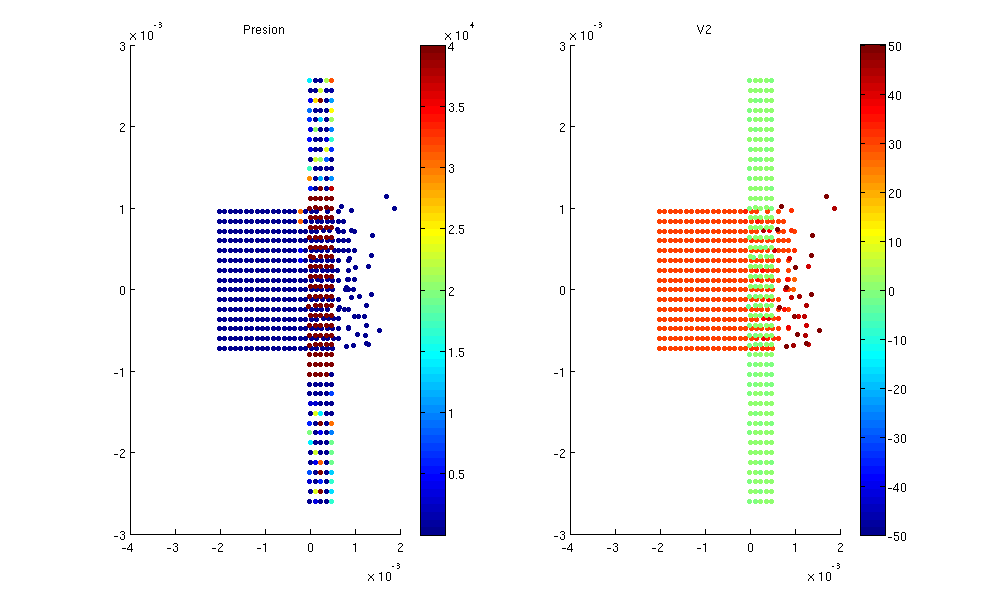 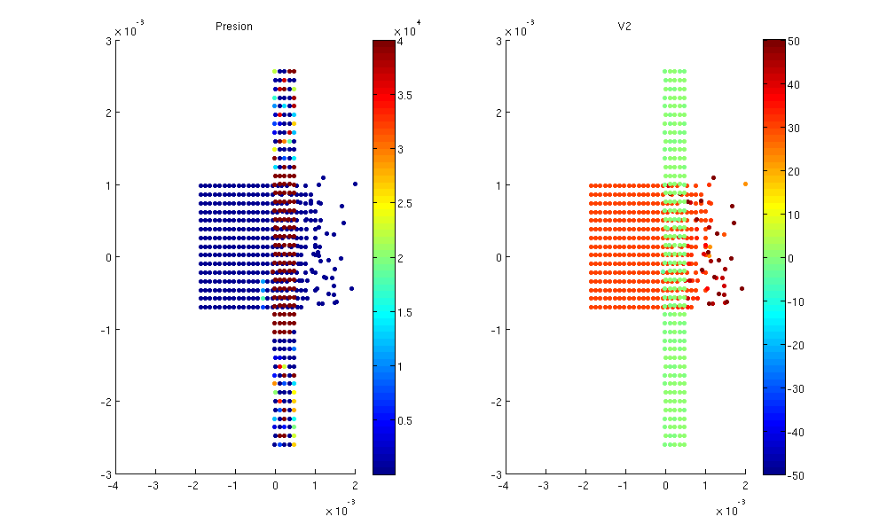 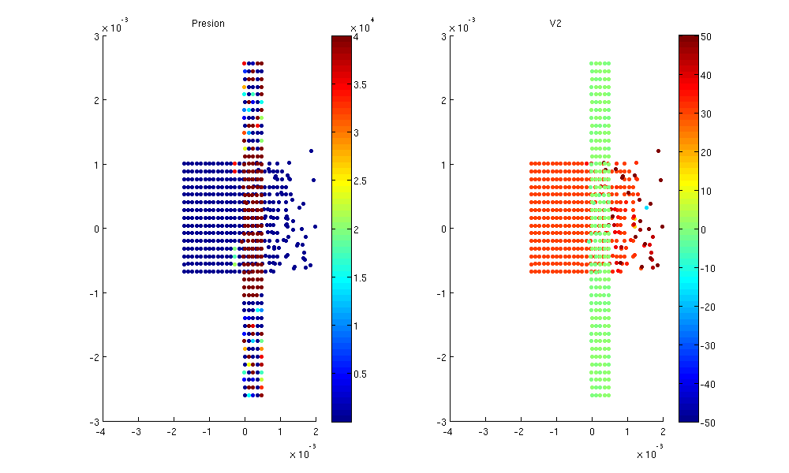 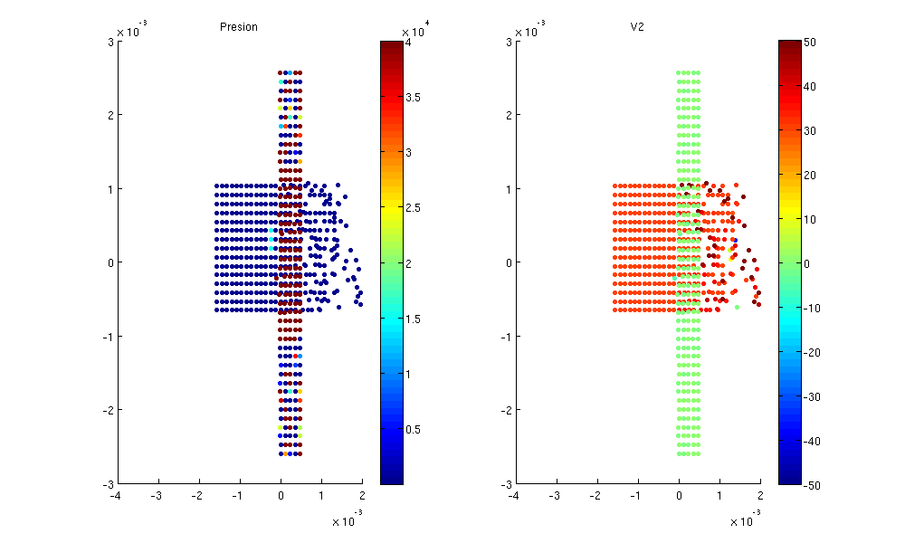 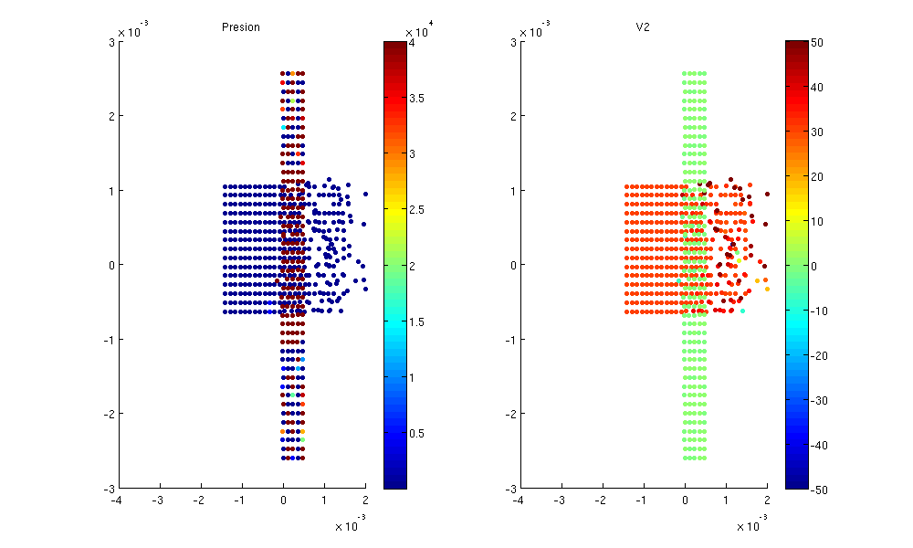 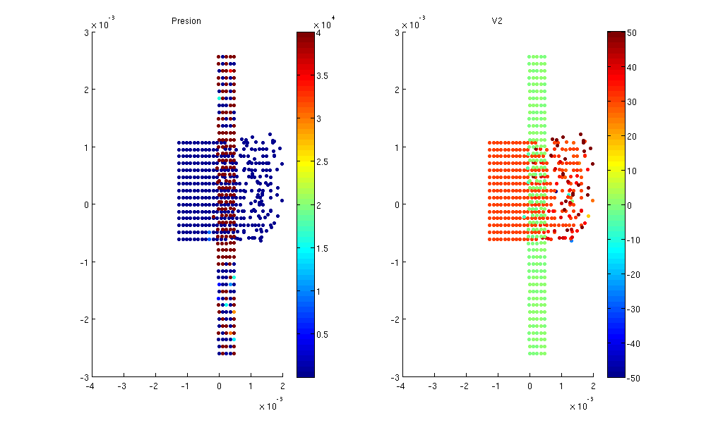 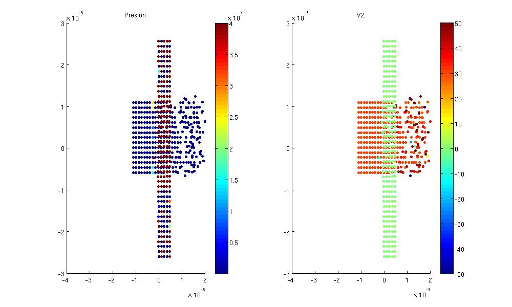
end
whos
Numero de Pasos = 196 Name Size Bytes Class Attributes B_C 1x1 8 double B_E 1x1 8 double B_G 1x1 8 double B_S 1x1 8 double B_V 1x1 8 double B_Y0 1x1 8 double B_alpha 1x1 8 double B_beta 1x1 8 double B_dx 1x1 8 double B_dy 1x1 8 double B_eps 1x1 8 double B_eta 1x1 8 double B_gamma 1x1 8 double B_height 1x1 8 double B_m0 1x1 8 double B_np 1x1 8 double B_rho 1x1 8 double B_ss 1x1 8 double B_width 1x1 8 double B_x 1x26 208 double B_x0 1x1 8 double B_y 1x15 120 double B_y0 1x1 8 double Bullet 390x2 6240 double Coordenadas 610x39 190320 double D 610x1 4880 double Densidad 610x39 190320 double Dist 610x1 128032 cell E_int 610x1 4880 double Esfuerzos11 610x39 190320 double Esfuerzos12 610x39 190320 double Esfuerzos21 610x39 190320 double Esfuerzos22 610x39 190320 double Flaws 220x1 34136 cell J 1x1 8 double M 610x1 4880 double N_part 1x1 8 double Nearpart 610x1 128032 cell Nflaws 1x1 8 double P 610x1 4880 double Particles 610x2 9760 double Presion 610x39 190320 double Rho 610x1 4880 double T_C 1x1 8 double T_E 1x1 8 double T_G 1x1 8 double T_S 1x1 8 double T_V 1x1 8 double T_Y0 1x1 8 double T_alpha 1x1 8 double T_beta 1x1 8 double T_dx 1x1 8 double T_dy 1x1 8 double T_eps 1x1 8 double T_eta 1x1 8 double T_gamma 1x1 8 double T_height 1x1 8 double T_m0 1x1 8 double T_np 1x1 8 double T_rho 1x1 8 double T_ss 1x1 8 double T_width 1x1 8 double T_x 1x5 40 double T_y 1x44 352 double Target 220x2 3520 double Tau11 610x1 4880 double Tau12 610x1 4880 double Tau21 610x1 4880 double Tau22 610x1 4880 double V1 610x1 4880 double V2 610x1 4880 double V_1 1x1 8 double V_2 1x1 8 double Velocidad1 610x39 190320 double Velocidad2 610x39 190320 double X 15x26 3120 double Y 15x26 3120 double assign_flaws 1187x1 4748 uint32 cs 610x1 4880 double dE_int 610x1 4880 double dRho 610x1 4880 double dTau11 610x1 4880 double dTau12 610x1 4880 double dTau21 610x1 4880 double dTau22 610x1 4880 double dV1 610x1 4880 double dV2 610x1 4880 double dkernx 610x1 128032 cell dkerny 610x1 128032 cell dt 1x1 8 double dv1dx1 610x1 4880 double dv1dx2 610x1 4880 double dv2dx1 610x1 4880 double dv2dx2 610x1 4880 double eps11 610x1 4880 double eps12 610x1 4880 double eps21 610x1 4880 double eps22 610x1 4880 double f 1x1 8 double h 1x1 8 double hFig 1x1 8 double i 1x1 8 double k 1x1 8 double kern 610x1 128032 cell m 1x1 8 double n_m 1x1 8 double s_x 1x1 8 double scalar 1x1 8 double steps 1x1 8 double t 1x1 8 double tf 1x1 8 double ti 1x1 8 double
Comentarios JC
Situaciones por corregir: # Generacion de numero complejos Se estan generando coordenadas complejas en el arreglo Particles, pro el momento lo soluciono tomando solo la parte real de Particles. Tambien se estan generando complejos en dE_int y otras derivadas # Propiedades de Materiales Se esta trabajndo unicamente con las propiedades del basalto. Falta consultar propiedades para un material comun en balas